Nuestros Proyectos
Experiencias transformadoras que combinan arte, narrativa y participación comunitaria para crear espacios de conexión, creatividad y crecimiento personal.
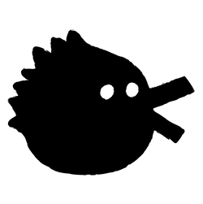
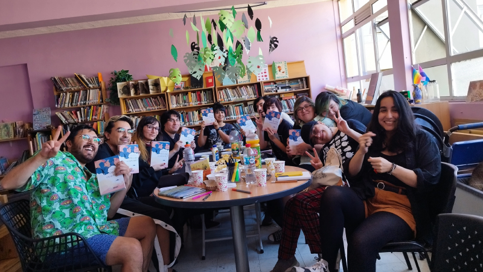
Te leo, te dibujo
Club de lectura de Narrativa Gráfica
Te leo, te dibujo nació en 2018 como una colaboración con Biblioteca Viva Trébol. Durante ese primer año y el siguiente, fuimos reuniendo un grupo constante de lectorxs interesadxs en el cómic, el manga y la novela gráfica.
En 2020, adaptamos el club a un formato virtual debido a la pandemia, lo que nos permitió conectar con personas de distintas regiones de Chile y romper las barreras geográficas.
Entre 2021 y 2023, el proyecto fue seleccionado y financiado por el Fondo del Libro y la Lectura, consolidando su presencia en la provincia de Concepción con actividades presenciales y encuentros comunitarios.
El club propone espacios de diálogo en torno a la narrativa gráfica, explorando su vínculo con otras disciplinas artísticas. Buscamos promover el disfrute lector, el pensamiento crítico y la creatividad a través del lenguaje visual.
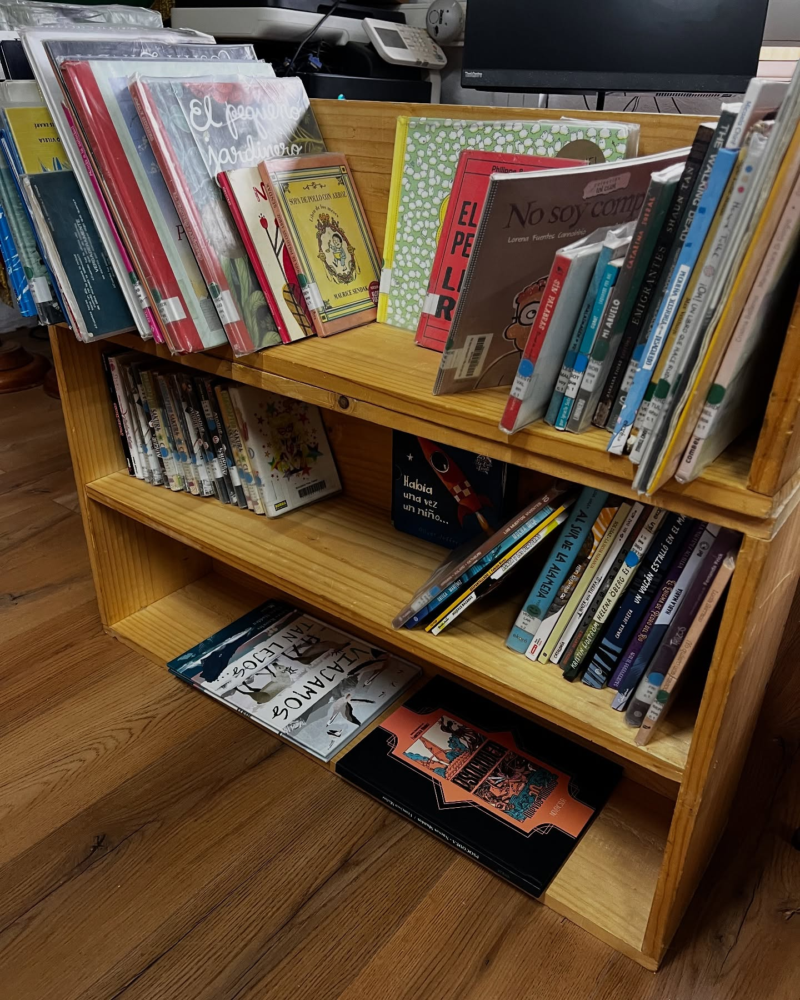
Insectaria
Biblioteca Comunitaria Ilustrada
En 2022, Ansiosxs Nuevas Lecturas inauguró Insectaria, una biblioteca comunitaria autogestionada y especializada en narrativas ilustradas. Este espacio nació gracias a donaciones de la ex Biblioteca Viva y a un convenio con el SLEP Andalién Sur y el Liceo de Adultos José Manuel Balmaceda, que nos permite utilizar parte de sus instalaciones frente a la plaza Condell, en Concepción.
Desde 2023, Insectaria ha albergado actividades como el Club Andrómeda de constelaciones narrativas, el Laboratorio de fanzines, talleres de cerámica y dibujo, y capacitaciones para el estudiantado del Liceo Balmaceda.
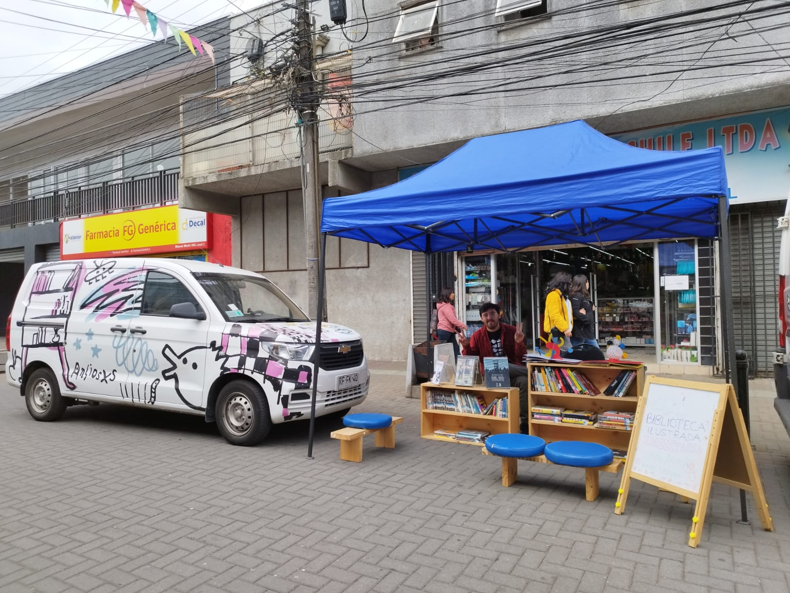
Bibliomóvil
Nuevas Lecturas Móviles – Ruta Costera
En 2021, Ansiosxs Nuevas Lecturas implementó su primer bibliomóvil gracias al Fondo del Libro y la Lectura. Así nació Nuevas Lecturas Móviles, un proyecto que comenzó recorriendo las caletas costeras de la comuna de Tomé —Dichato, Cocholgüe y Coliumo— con un catálogo especializado en narrativas ilustradas.
El objetivo: Acercar la lectura a territorios con baja oferta cultural, fomentando el encuentro entre libros, cuerpos y paisajes.
Con el tiempo, el bibliomóvil ha crecido y expandido su ruta. Hoy también realiza mediaciones en escuelas rurales, participa en ferias del libro, ha visitado la Isla Santa María y ha sido parte de encuentros de bibliomóviles a nivel regional. Además, hemos colaborado con el Plan Nacional de la Lectura, llevando nuestras lecturas móviles a nuevas comunidades.
El bibliomóvil de Ansiosxs es más que una biblioteca rodante: es un espacio de encuentro, juego y descubrimiento donde la lectura se despliega en movimiento.
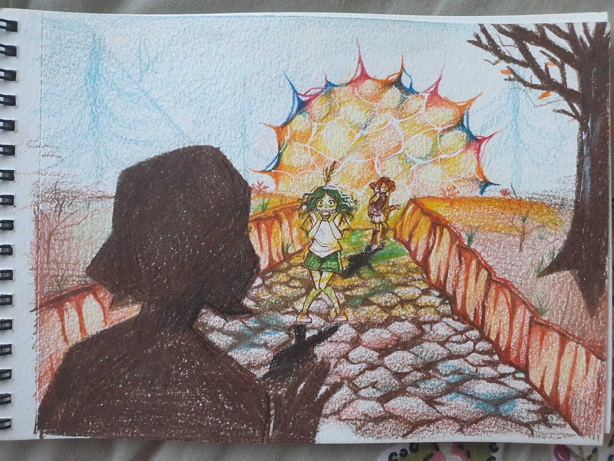
Talleres Crea-Expresa
Arte, narrativa y comunidad para transformar el mundo desde la infancia y la diversidad.
Primera edición (2023)
Financiada por FIFOCC, esta edición se enfocó en niñxs de 10 a 15 años, promoviendo el uso de bibliotecas como espacios culturales vivos.
- Taller de Creación de Cómic en Hualpén.
- Taller de Kamishibai en San Pedro de la Paz.
Segunda edición (2024)
Financiada por Fondart, se expande a todo Chile con talleres online para mujeres y personas LGBTQIA+, enviando materiales gratuitos a lxs inscritxs.
- Dibuja tu sueño – Hans Peralta
- Flora imaginaria – Pamela Mendoza
- Dibujar vida silvestre – Elisa Echeverría
- Autoficción queer – María José Suárez
- Diversidad y diseño de personajes – Nataschia Navarro
- Imprime tu pasión – Adrián Cortés
Colaboraciones
Creemos en el trabajo colectivo y en la fuerza de las redes. Colaboramos activamente con instituciones públicas y privadas que promueven la lectura, la cultura y los derechos humanos.
- Capacitaciones para bibliotecarixs con Fundación La Fuente y el Plan Nacional de la Lectura.
- Talleres de fanzine en territorios como Isla Santa María, Isla Mocha y Santa Juana.
- Mentorías para jóvenes en el programa Creamos INJUV.
¡Gracias a todas las instituciones y personas que han confiado en nuestro trabajo!
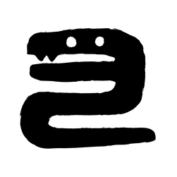
Nuestra Red de Colaboradores
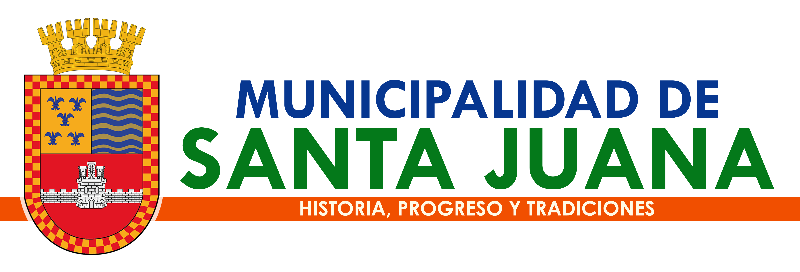
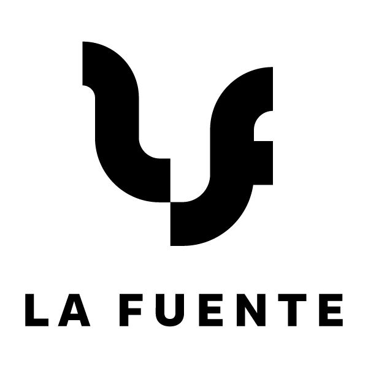
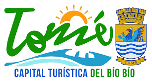
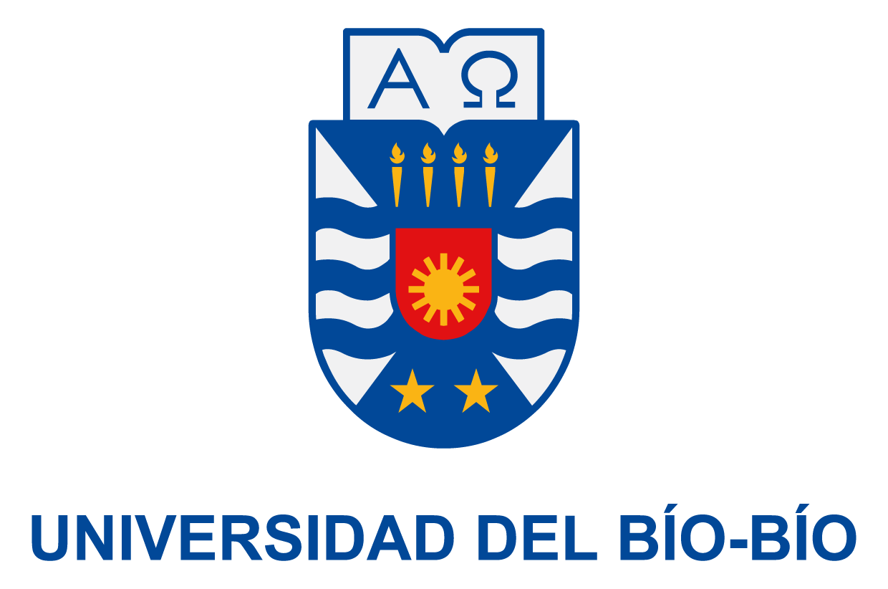
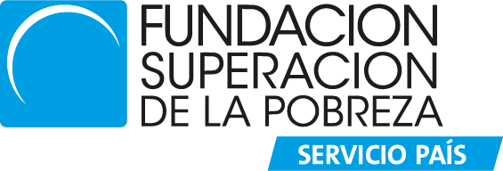
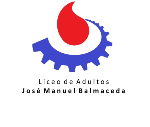
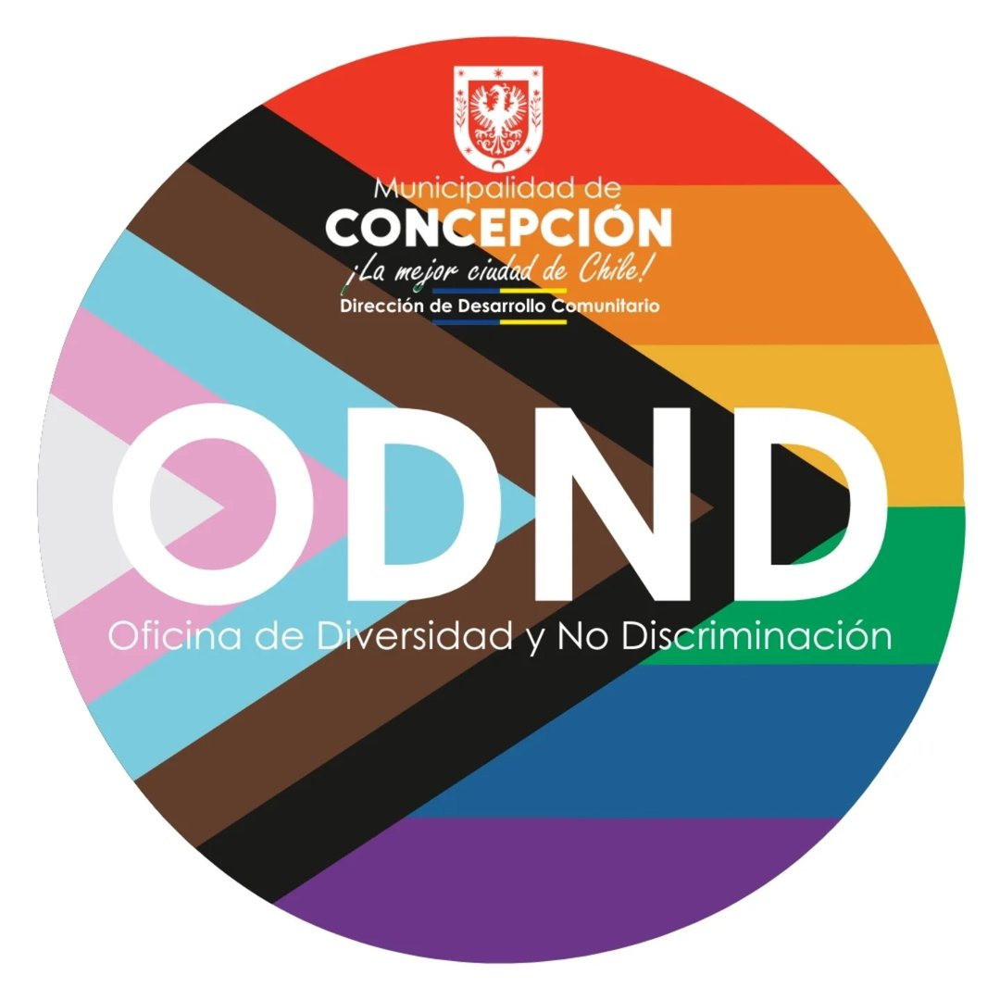
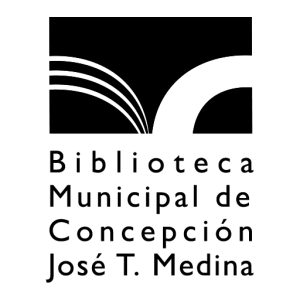
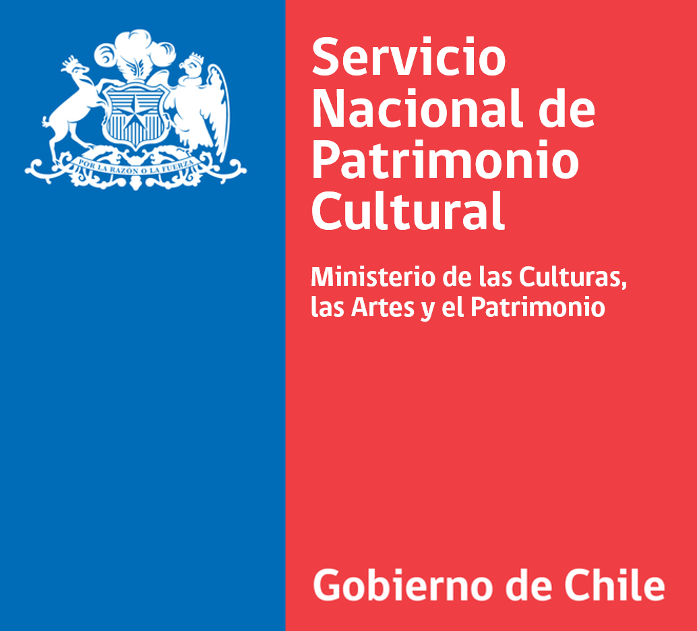
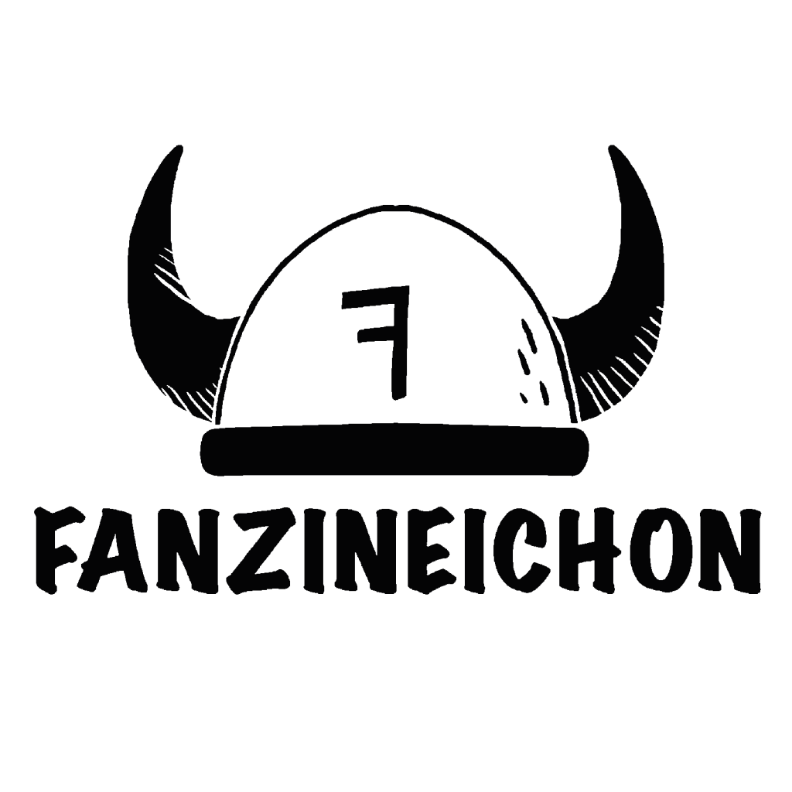
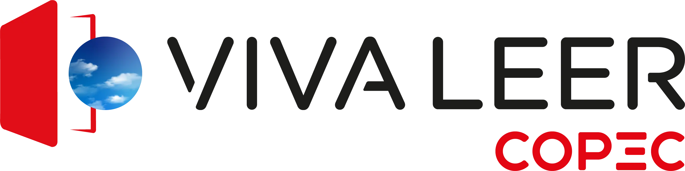